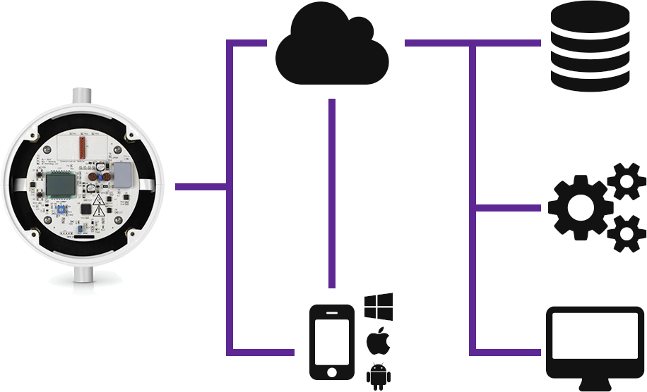

Building Internet of Things Devices with AllJoyn
@irjudson
ivan.judson@microsoft.com
What is AllJoyn?
AllJoyn is...
a system that allows devices to advertise and share their abilities with other devices around them.
a protocol that your devices can use to interact intelligently.
a library you can include in your software to make smarter devices.
AllJoyn System Architecture
Gateways. Routers. Services. Clients.AllJoyn Gateway
Remote access and management
Interoperability
Supports open standards:
REST, XMPP, MQTT and TR-069.
AllJoyn Router
Connect Services and Clients.
Cache transient information.
Allow for arbitrary topology.
AllJoyn Service
Discoverable.
Expose interfaces.
Interfaces are exposed in detail.
AllJoyn Client
Connect to Services
Expose Services to other Services
Expose Services to Users
AllJoyn Standard vs Thin Library
| Standard | Thin |
|---|---|
| Mobile, Laptop | RTOS |
| C++, C, Java, JavaScript, Objective-C | C |
| Router optional | No Router |
Microsoft & AllJoyn
AllJoyn inside Windows 10!
Support in Visual Studio
AllJoyn Studio pluginAllJoyn Cordova Plugin & Apps
The Open Source Cordova PluginExample
Heatworks

Heatworks Architecture
Control Interface
| Control | Range | Units |
|---|---|---|
| Set Point | 75-130 | Degrees F |
| Current Temperature | 40-160 | Degrees F |
| Current Amps | 0-50 | Amps |
| Total Time | 0-MAXINT | Seconds |
| Total Amps | 0-MAXINT | Amps |
| Special Modes | 0-255 | Bitmask |
| Presets | Undefined | Undefined |
AllJoyn Interface
Common Definitions
#define CONNECT_ATTEMPTS 10
/* All times are expressed in milliseconds. */
#define CONNECT_TIMEOUT (1000 * 60)
#define UNMARSHAL_TIMEOUT (1000 * 5)
#define SLEEP_TIME (1000 * 2)
#define METHOD_TIMEOUT (100 * 10)
static const char ServiceName[] = "com.myheatworks.model1";
static const char ServicePath[] = "/control";
static const uint16_t ServicePort = 25;
/*
* Buffer to hold the full service name. This buffer must be big enough to hold
* a possible 255 characters plus a null terminator (256 bytes)
*/
static char fullServiceName[AJ_MAX_SERVICE_NAME_SIZE];
/**
* The interface name followed by the method signatures.
*
* See also aj_introspect.h
*/
static const char* const sampleInterface[] = {
"com.myheatworks.model1", /* The first entry is the interface name. */
"?setPoint temp<y", /* Set the water temperature */
"?currentTemp temp>y", /* Get the water temperature setting */
"?softCurrentLimit current<y", /* Set the soft current limit */
"?currentDrawInstant current>y", /* Get the current draw at this instant */
"?timeOdometerValue time>i", /* Get the number of seconds the unit has been running. */
"?currentOdometerValue current>i", /* Get the integral of amps where dt = 4 seconds */
NULL
};
/**
* A NULL terminated collection of all interfaces.
*/
static const AJ_InterfaceDescription sampleInterfaces[] = {
sampleInterface,
NULL
};
/**
* Objects implemented by the application. The first member in the AJ_Object structure is the path.
* The second is the collection of all interfaces at that path.
*/
static const AJ_Object AppObjects[] = {
{ ServicePath, sampleInterfaces },
{ NULL }
};Service Implementation
#define AJ_MODULE MODEL1_SERVICE
#include <stdio.h>
#include <aj_debug.h>
#include "alljoyn.h"
#include "model1.h"
uint8_t dbgMODEL1_SERVICE = 0;
/*
* The value of the arguments are the indices of the
* object path in AppObjects (above), interface in sampleInterfaces (above), and
* member indices in the interface.
* The first index is 1 because the first entry in sampleInterface is the interface name.
* This makes the first index (index 0 of the methods) the second string in
* sampleInterface[].
*
* See also aj_introspect.h
*/
#define BASIC_SERVICE_SETPOINT AJ_APP_MESSAGE_ID(0, 0, 0)
#define BASIC_SERVICE_CURRENT_TEMP AJ_APP_MESSAGE_ID(0, 0, 1)
#define BASIC_SERVICE_SOFT_CURRENT_LIMIT AJ_APP_MESSAGE_ID(0, 0, 2)
#define BASIC_SERVICE_CURRENT_DRAW_INSTANT AJ_APP_MESSAGE_ID(0, 0, 3)
#define BASIC_SERVICE_TIME_ODOMETER AJ_APP_MESSAGE_ID(0, 0, 4)
#define BASIC_SERVICE_CURRENT_ODOMETER AJ_APP_MESSAGE_ID(0, 0, 5)
int main(int argc, char **argv)
{
AJ_Status status = AJ_OK;
AJ_BusAttachment bus;
uint8_t connected = FALSE;
uint32_t sessionId = 0;
/* One time initialization before calling any other AllJoyn APIs. */
AJ_Initialize();
/* This is for debug purposes and is optional. */
AJ_PrintXML(AppObjects);
AJ_RegisterObjects(AppObjects, NULL);
while (TRUE) {
AJ_Message msg;
if (!connected) {
status = AJ_StartService(&bus,
NULL,
CONNECT_TIMEOUT,
FALSE,
ServicePort,
ServiceName,
AJ_NAME_REQ_DO_NOT_QUEUE,
NULL);
if (status != AJ_OK) {
continue;
}
AJ_InfoPrintf(("StartService returned %d, session_id=%u\n", status, sessionId));
connected = TRUE;
}
status = AJ_UnmarshalMsg(&bus, &msg, UNMARSHAL_TIMEOUT);
if (AJ_ERR_TIMEOUT == status) {
continue;
}
if (AJ_OK == status) {
switch (msg.msgId) {
case AJ_METHOD_ACCEPT_SESSION:
{
uint16_t port;
char* joiner;
AJ_UnmarshalArgs(&msg, "qus", &port, &sessionId, &joiner);
status = AJ_BusReplyAcceptSession(&msg, TRUE);
AJ_InfoPrintf(("Accepted session session_id=%u joiner=%s\n", sessionId, joiner));
}
break;
case BASIC_SERVICE_SETPOINT:
{
uint8_t setPoint = 40;
AJ_Message reply;
AJ_UnmarshalArgs(&msg, "y", &setPoint);
AJ_AlwaysPrintf(("Setting set point to: %d F.\n", setPoint));
/* Make set setpoint call */
AJ_MarshalReplyMsg(&msg, &reply);
AJ_InfoPrintf(("Set target water temperature returned %d, session_id=%u\n", status, sessionId));
status = AJ_DeliverMsg(&reply);
}
break;
case BASIC_SERVICE_CURRENT_TEMP:
{
uint8_t currentTemp = 42;
AJ_Message reply;
AJ_Arg replyArg;
AJ_MarshalReplyMsg(&msg, &reply);
AJ_AlwaysPrintf(("Getting current temperature: %d F.\n", currentTemp));
/* Get the current temperature */
AJ_InitArg(&replyArg, AJ_ARG_BYTE, 0, (void *)¤tTemp, 0);
AJ_MarshalArg(&reply, &replyArg);
AJ_InfoPrintf(("Asked for current temperature returned %d, session_id=%u\n", status, sessionId));
status = AJ_DeliverMsg(&reply);
}
break;
case BASIC_SERVICE_SOFT_CURRENT_LIMIT:
{
uint8_t currentLimit = 10;
AJ_Message reply;
AJ_UnmarshalArgs(&msg, "y", ¤tLimit);
AJ_AlwaysPrintf(("Setting soft current limit to: %d amps.\n", currentLimit));
/* Actually set the set point! */
AJ_MarshalReplyMsg(&msg, &reply);
AJ_InfoPrintf(("Setting soft current limit: returned %d, session_id=%u\n", status, sessionId));
status = AJ_DeliverMsg(&reply);
}
break;
case BASIC_SERVICE_CURRENT_DRAW_INSTANT:
{
uint8_t currentUsedNow = 0;
AJ_Message reply;
AJ_Arg replyArg;
AJ_MarshalReplyMsg(&msg, &reply);
AJ_AlwaysPrintf(("Getting instantaneous current draw: %d amps.\n", currentUsedNow));
/* Get current draw */
AJ_InitArg(&replyArg, AJ_ARG_BYTE, 0, (void *)¤tUsedNow, 0);
AJ_MarshalArg(&reply, &replyArg);
AJ_InfoPrintf(("Asked for instant current draw value: returned %d, session_id=%u\n", status, sessionId));
status = AJ_DeliverMsg(&reply);
}
break;
case BASIC_SERVICE_TIME_ODOMETER:
{
int timeRunning = 0;
AJ_Message reply;
AJ_Arg replyArg;
AJ_MarshalReplyMsg(&msg, &reply);
AJ_AlwaysPrintf(("Getting time odometer: %d seconds.\n", timeRunning));
/* Get current time odometer */
AJ_InitArg(&replyArg, AJ_ARG_INT32, 0, (void *)&timeRunning, 0);
AJ_MarshalArg(&reply, &replyArg);
AJ_InfoPrintf(("Asked for time odometer value: returned %d, session_id=%u\n", status, sessionId));
status = AJ_DeliverMsg(&reply);
}
break;
case BASIC_SERVICE_CURRENT_ODOMETER:
{
int ampsUsed = 0;
AJ_Message reply;
AJ_Arg replyArg;
AJ_MarshalReplyMsg(&msg, &reply);
AJ_AlwaysPrintf(("Getting current odometer: %d amps.\n", ampsUsed));
/* Get current time odometer */
AJ_InitArg(&replyArg, AJ_ARG_INT32, 0, (void *)&sUsed, 0);
AJ_MarshalArg(&reply, &replyArg);
AJ_InfoPrintf(("Asked for current odometer value: returned %d, session_id=%u\n", status, sessionId));
status = AJ_DeliverMsg(&reply);
}
break;
case AJ_SIGNAL_SESSION_LOST_WITH_REASON:
/* Session was lost so return error to force a disconnect. */
{
uint32_t id, reason;
AJ_UnmarshalArgs(&msg, "uu", &id, &reason);
AJ_AlwaysPrintf(("Session lost. ID = %u, reason = %u", id, reason));
}
status = AJ_ERR_SESSION_LOST;
break;
default:
/* Pass to the built-in handlers. */
status = AJ_BusHandleBusMessage(&msg);
break;
}
}
/* Messages MUST be discarded to free resources. */
AJ_CloseMsg(&msg);
if ((status == AJ_ERR_SESSION_LOST || status == AJ_ERR_READ)) {
AJ_AlwaysPrintf(("AllJoyn disconnect.\n"));
AJ_Disconnect(&bus);
connected = FALSE;
/* Sleep a little while before trying to reconnect. */
AJ_Sleep(SLEEP_TIME);
}
}
AJ_AlwaysPrintf(("Basic service exiting with status %d.\n", status));
return status;
}
Client Implementation
#define AJ_MODULE MODEL1_CLIENT
#include <stdio.h>
#include <stdlib.h>
#include <aj_debug.h>
#include <alljoyn.h>
#include "model1.h"
uint8_t dbgMODEL1_CLIENT = 0;
/*
* The value of the arguments are the indices of the
* object path in AppObjects (above), interface in sampleInterfaces (above), and
* member indices in the interface.
* The first index is 1 because the first entry in sampleInterface is the interface name.
* This makes the first index (index 0 of the methods) the second string in
* sampleInterface[].
*
* See also aj_introspect.h
*/
#define BASIC_CLIENT_SETPOINT AJ_PRX_MESSAGE_ID(0, 0, 0)
#define BASIC_CLIENT_CURRENT_TEMP AJ_PRX_MESSAGE_ID(0, 0, 1)
#define BASIC_CLIENT_SOFT_CURRENT_LIMIT AJ_PRX_MESSAGE_ID(0, 0, 2)
#define BASIC_CLIENT_CURRENT_DRAW_INSTANT AJ_PRX_MESSAGE_ID(0, 0, 3)
#define BASIC_CLIENT_TIME_ODOMETER AJ_PRX_MESSAGE_ID(0, 0, 4)
#define BASIC_CLIENT_CURRENT_ODOMETER AJ_PRX_MESSAGE_ID(0, 0, 5)
void SetPoint(AJ_BusAttachment *bus, uint32_t sessionId, uint8_t setPoint)
{
AJ_Status status = AJ_OK;
AJ_Message msg;
status = AJ_MarshalMethodCall(bus, &msg, BASIC_CLIENT_SETPOINT, fullServiceName, sessionId, 0, METHOD_TIMEOUT);
if (status == AJ_OK) {
status = AJ_MarshalArgs(&msg, "y", setPoint);
}
if (status == AJ_OK) {
status = AJ_DeliverMsg(&msg);
}
AJ_InfoPrintf(("SetSetPoint() resulted in a status of 0x%04x.\n", status));
}
void GetCurrentTemp(AJ_BusAttachment *bus, uint32_t sessionId)
{
AJ_Status status = AJ_OK;
AJ_Message msg;
status = AJ_MarshalMethodCall(bus, &msg, BASIC_CLIENT_CURRENT_TEMP, fullServiceName, sessionId, 0, METHOD_TIMEOUT);
if (status == AJ_OK) {
status = AJ_DeliverMsg(&msg);
}
AJ_InfoPrintf(("GetCurrentTemp() resulted in a status of 0x%04x.\n", status));
}
void SetSoftCurrentLimit(AJ_BusAttachment *bus, uint32_t sessionId, uint8_t currentLimit)
{
AJ_Status status = AJ_OK;
AJ_Message msg;
status = AJ_MarshalMethodCall(bus, &msg, BASIC_CLIENT_SOFT_CURRENT_LIMIT, fullServiceName, sessionId, 0, METHOD_TIMEOUT);
if (status == AJ_OK) {
status = AJ_MarshalArgs(&msg, "y", currentLimit);
}
if (status == AJ_OK) {
status = AJ_DeliverMsg(&msg);
}
AJ_InfoPrintf(("SetSoftCurrentLimit() resulted in a status of 0x%04x.\n", status));
}
void GetCurrentDraw(AJ_BusAttachment *bus, uint32_t sessionId)
{
AJ_Status status = AJ_OK;
AJ_Message msg;
status = AJ_MarshalMethodCall(bus, &msg, BASIC_CLIENT_CURRENT_DRAW_INSTANT, fullServiceName, sessionId, 0, METHOD_TIMEOUT);
if (status == AJ_OK) {
status = AJ_DeliverMsg(&msg);
}
AJ_InfoPrintf(("GetCurrentDraw() resulted in a status of 0x%04x.\n", status));
}
void GetTimeOdometer(AJ_BusAttachment *bus, uint32_t sessionId)
{
AJ_Status status = AJ_OK;
AJ_Message msg;
status = AJ_MarshalMethodCall(bus, &msg, BASIC_CLIENT_TIME_ODOMETER, fullServiceName, sessionId, 0, METHOD_TIMEOUT);
if (status == AJ_OK) {
status = AJ_DeliverMsg(&msg);
}
AJ_InfoPrintf(("GetTimeOdometer() resulted in a status of 0x%04x.\n", status));
}
void GetCurrentOdometer(AJ_BusAttachment *bus, uint32_t sessionId)
{
AJ_Status status = AJ_OK;
AJ_Message msg;
status = AJ_MarshalMethodCall(bus, &msg, BASIC_CLIENT_CURRENT_ODOMETER, fullServiceName, sessionId, 0, METHOD_TIMEOUT);
if (status == AJ_OK) {
status = AJ_DeliverMsg(&msg);
}
AJ_InfoPrintf(("GetCurrentOdometer() resulted in a status of 0x%04x.\n", status));
}
int main(int argc, char **argv)
{
AJ_Status status = AJ_OK;
AJ_BusAttachment bus;
uint8_t connected = FALSE;
uint8_t done = FALSE;
uint32_t sessionId = 0;
/*
* One time initialization before calling any other AllJoyn APIs
*/
AJ_Initialize();
AJ_PrintXML(AppObjects);
AJ_RegisterObjects(NULL, AppObjects);
while (!done) {
AJ_Message msg;
if (!connected) {
status = AJ_StartClientByName(&bus,
NULL,
CONNECT_TIMEOUT,
FALSE,
ServiceName,
ServicePort,
&sessionId,
NULL,
fullServiceName);
if (status == AJ_OK) {
AJ_InfoPrintf(("StartClient returned %d, sessionId=%u.\n", status, sessionId));
connected = TRUE;
SetPoint(&bus, sessionId, 50);
GetCurrentTemp(&bus, sessionId);
SetSoftCurrentLimit(&bus, sessionId, 48);
GetCurrentDraw(&bus, sessionId);
GetTimeOdometer(&bus, sessionId);
GetCurrentOdometer(&bus, sessionId);
} else {
AJ_InfoPrintf(("StartClient returned 0x%04x.\n", status));
break;
}
}
status = AJ_UnmarshalMsg(&bus, &msg, UNMARSHAL_TIMEOUT);
if (AJ_ERR_TIMEOUT == status) {
continue;
}
if (AJ_OK == status) {
switch (msg.msgId) {
case AJ_REPLY_ID(BASIC_CLIENT_CURRENT_TEMP):
{
AJ_Arg arg;
status = AJ_UnmarshalArg(&msg, &arg);
if (AJ_OK == status) {
AJ_AlwaysPrintf(("'%s.%s' (path='%s') returned '%d'.\n", fullServiceName, "currentTemp",
ServicePath, (int)*(arg.val.v_byte)));
} else {
AJ_InfoPrintf(("AJ_UnmarshalArg() returned status %d.\n", status));
GetCurrentTemp(&bus, sessionId);
}
}
break;
case AJ_REPLY_ID(BASIC_CLIENT_CURRENT_DRAW_INSTANT):
{
AJ_Arg arg;
status = AJ_UnmarshalArg(&msg, &arg);
if (AJ_OK == status) {
AJ_AlwaysPrintf(("'%s.%s' (path='%s') returned '%d'.\n", fullServiceName, "currentDrawInstant",
ServicePath, (int)*(arg.val.v_byte)));
} else {
AJ_InfoPrintf(("AJ_UnmarshalArg() returned status %d.\n", status));
GetCurrentTemp(&bus, sessionId);
}
}
break;
case AJ_REPLY_ID(BASIC_CLIENT_TIME_ODOMETER):
{
AJ_Arg arg;
status = AJ_UnmarshalArg(&msg, &arg);
if (AJ_OK == status) {
AJ_AlwaysPrintf(("'%s.%s' (path='%s') returned '%d'.\n", fullServiceName, "timeOdometerValue",
ServicePath, (int)*(arg.val.v_int32)));
} else {
AJ_InfoPrintf(("AJ_UnmarshalArg() returned status %d.\n", status));
GetCurrentTemp(&bus, sessionId);
}
}
break;
case AJ_REPLY_ID(BASIC_CLIENT_CURRENT_ODOMETER):
{
AJ_Arg arg;
status = AJ_UnmarshalArg(&msg, &arg);
if (AJ_OK == status) {
AJ_AlwaysPrintf(("'%s.%s' (path='%s') returned '%d'.\n", fullServiceName, "currentOdometerValue",
ServicePath, (int)*(arg.val.v_int32)));
} else {
AJ_InfoPrintf(("AJ_UnmarshalArg() returned status %d.\n", status));
GetCurrentTemp(&bus, sessionId);
}
}
break;
case AJ_SIGNAL_SESSION_LOST_WITH_REASON:
/* A session was lost so return error to force a disconnect. */
{
uint32_t id, reason;
AJ_UnmarshalArgs(&msg, "uu", &id, &reason);
AJ_AlwaysPrintf(("Session lost. ID = %u, reason = %u", id, reason));
}
status = AJ_ERR_SESSION_LOST;
break;
default:
/* Pass to the built-in handlers. */
status = AJ_BusHandleBusMessage(&msg);
break;
}
}
/* Messages MUST be discarded to free resources. */
AJ_CloseMsg(&msg);
if (status == AJ_ERR_SESSION_LOST) {
AJ_AlwaysPrintf(("AllJoyn disconnect.\n"));
AJ_Disconnect(&bus);
exit(0);
}
}
AJ_AlwaysPrintf(("Basic client exiting with status %d.\n", status));
return status;
}
Thanks!
Ivan R. Judson, PhD